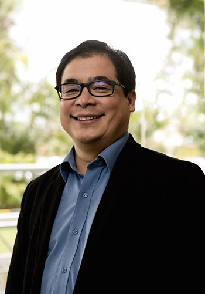

Workshop organizer
Benjamín Castañeda, PhD
University of Rochester, USA
Benjamin Castaneda is a Professor of Biomedical Engineering at the University of Rochester, with appointments in Electrical and Computer Engineering and Imaging Sciences. He directs the Global Health and Medical Devices Laboratory, where his research focuses on biomedical ultrasound, artificial intelligence, and accessible diagnostic imaging.
His work has focused on the development and clinical implementation of Volume Sweep Imaging (VSI) and its integration with artificial intelligence (VSI-AI) to democratize access to ultrasound. His research combines simplified and standardized acquisition protocols, automated image analysis and interpretation, and asynchronous telemedicine to enable ultrasound examinations by non-expert operators with minimal training. His team has developed and clinically evaluated these technologies for breast, lung, obstetric, thyroid, and abdominal imaging, reaching approximately 4,000 patients in underserved communities in Peru.
His current research focuses on AI-enabled acquisition guidance, automated quality assessment, diagnostic interpretation, and the scalable implementation of ultrasound technologies in resource-constrained and point-of-care settings.